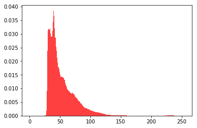

In [1]:
import sklearn
from PIL import Image
import skimage.io as SKimg
import numpy as np
import random
import pyhdf.SD as hdf
import matplotlib.pyplot as plt
import ogr
import gdal
from osgeo import gdalconst
import rasterio as rio
from scipy.sparse import csr_matrix
import scipy.io as sio
from sklearn.cluster import MiniBatchKMeans, KMeans
from sklearn.metrics.pairwise import pairwise_distances_argmin
In [2]:
Tpan =SKimg.imread("F:/pythontestdata/MyTiff/tianhui1200pan.tif")
SKimg.imshow(Tpan)
SKimg.show()
Tpan.shape

Out[2]:
(1200, 1200)
In [3]:
plt.figure()
#要对图像求直方图，就需要先把图像矩阵进行flatten操作，使之变为一维数组，然后再进行统计
arr=Tpan.flatten()
n, bins, patches = plt.hist(arr, bins=np.arange(0,255), normed=1, facecolor='red', alpha=0.75)
plt.show()

In [4]:
GroudTrue =SKimg.imread("F:/pythontestdata/MyTiff/gt_tianhui1200.tif")
SKimg.imshow(GroudTrue)
SKimg.show()
GroudTrue.shape

Out[4]:
(1200, 1200, 3)
In [5]:
#matlab文件名
matfn='gt_tianhui1200.mat';
data=sio.loadmat(matfn);
mk = data['gt']
print(mk)
moban=(mk*0)+1;
plt.figure(figsize=(6,6))
im = Image.fromarray(mk);
plt.imshow(im,cmap=plt.cm.get_cmap('cubehelix_r',7));
cbar=plt.colorbar()
cbar.set_ticks(np.linspace(0,7,8))
cbar.set_ticklabels((' ','water','grass','bulding','road','luodi','background'))
plt.clim(-0.5,6.5)
plt.show();
[[6 6 4 ..., 6 6 6]
[6 6 6 ..., 6 6 6]
[6 6 6 ..., 6 6 6]
...,
[3 3 3 ..., 2 2 2]
[6 3 3 ..., 2 2 2]
[6 3 3 ..., 2 2 2]]

In [6]:
allValue=[]; allTempMask=[];
for j in range(1,7):
tempLabel=mk==j
tempMask=tempLabel*Tpan
allTempMask.append(tempMask)
finalTemp = tempMask[tempMask>0]
allValue.append(finalTemp);
plt.figure(figsize=(24,5))
Cmap=['Blues','Greens','Reds','Greys','Oranges','cool'];
for k in range(0,len(allTempMask)):
plt.subplot(1,6,k+1)
im = Image.fromarray(allTempMask[k])
plt.imshow(im,cmap=Cmap[k]);
plt.figure(figsize=(24,4));cor=['r','g','b','y','k','c'];
allLabel=['water','Grass','Building','Roda','barlSoil','background'];
Kwars=dict(histtype='stepfilled',alpha=0.9,normed=True,bins=np.arange(0,255));
for N in range(0,len(allValue)):
plt.subplot(1,6,N+1)
plt.hist(allValue[N],color=cor[N],**Kwars,label=allLabel[N]);
plt.ylim(0,0.12)
plt.xlim(0,120)
plt.legend();
plt.show();


In [7]:
Kwars=dict(histtype='stepfilled',alpha=0.5,normed=True,bins=np.arange(0,255));
print(allValue[0])
allLabel=['water','Grass','Building','Roda','barlSoil','background']; cor=['r','g','b','y','k','c'];
plt.figure(figsize=(6,5)); returnValue=[];
for i in range(0,6):
intervals=plt.hist(allValue[i],color=cor[i],**Kwars,label=allLabel[i])
returnValue.append(intervals);
plt.legend(); plt.xlim(0,150); plt.ylim(0,0.2);
plt.show()
Xvalue=[]; YFrenquce=[];
for F in range(0,len(returnValue)):
Xvalue.append(returnValue[F][1])
YFrenquce.append(returnValue[F][0]);
l=len(YFrenquce[4])
print(bins[2])
print(YFrenquce[2][8])
[31 31 30 ..., 79 84 67]

2
0.0
In [8]:
cols=Tpan.shape[0]; Rows=Tpan.shape[1];
AllPlabel=[];
for k in range(0,len(bins)-1):
maxP=0; INdex=0;
temp=[YFrenquce[0][k],YFrenquce[1][k],YFrenquce[2][k],YFrenquce[3][k],YFrenquce[4][k],YFrenquce[5][k]];
for L in range(0,len(temp)):
if(temp[L]>maxP):
maxP=temp[L]
INdex=L+1;
tempIndex=((np.abs(Tpan-bins[k]))<0.1)*moban;
temLabel=tempIndex*INdex
AllPlabel.append(temLabel);
sumLabel=AllPlabel[0];
for i in range(1,len(AllPlabel)):
sumLabel=sumLabel+AllPlabel[i];
predictLabel=sumLabel;
print(predictLabel)
TrueOrFalse=(predictLabel==mk)
TrueValue=TrueOrFalse[TrueOrFalse>0]
FalseValue=TrueOrFalse[TrueOrFalse==0]
correct=len(TrueValue)/(len(TrueValue)+len(FalseValue));
print(len(TrueValue)); print(len(FalseValue)); print(correct);
[[6 6 5 ..., 6 6 6]
[6 6 5 ..., 6 6 6]
[6 6 5 ..., 6 6 6]
...,
[3 3 3 ..., 1 1 1]
[3 3 3 ..., 1 1 1]
[3 3 3 ..., 1 1 1]]
586987
853013
0.4076298611111111
In [9]:
print(np.max(predictLabel)); print(np.min(predictLabel));
mylabel=predictLabel;
plt.figure(figsize=(6,6));
imF = Image.fromarray(mylabel);
plt.imshow(imF,cmap=plt.cm.get_cmap('cubehelix_r',7));
cbar=plt.colorbar()
cbar.set_ticks(np.linspace(0,7,8))
cbar.set_ticklabels((' ','water','grass','bulding','road','luodi','background'))
plt.clim(-0.5,6.5);
plt.title('PanClassTruth');
plt.show();
6
0

In [10]:
TRUEplace=(mylabel==mk)*10000;
FalsePlace=(mylabel!=mk)*10000;
plt.figure(figsize=(6,6))
imT = Image.fromarray(TRUEplace);
plt.imshow(imT,cmap='Oranges');
plt.title('Pantrueplace');
plt.show();

In [11]:
x = np.linspace(0,1200,1200)
y = np.linspace(0,1200,1200)
X,Y = np.meshgrid(x,y)
Xzip=list(zip(X.flat,Y.flat))
points = [point for point in zip(X.flat,Y.flat)]
points = np.array(points)
In [12]:
Cmap=['winter','Blues','Greens','Reds','Greys','Oranges','cool']
allLabel=['water','Grass','Building','Roda','barlSoil','background'];
plt.figure(figsize=(30,4))
for M in range(0,7):
temp=(predictLabel==M)*predictLabel
plt.subplot(1,7,M+1)
im = Image.fromarray(temp*100)
sct=plt.imshow(im,cmap=Cmap[M])
#plt.colorbar(sct,allLabel[M-1])
plt.show()